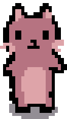

Hello! :D
I'm Allie, an aspiring game developer located in San Diego, CA.
Currently I am in school, pursuing a B.S. in Mathematics-Computer Science at UCSD (grad. Spring 2027). I enjoy programming and creating art.
To contact me, please send me an email at a2atkinson@ucsd.edu.
Current Projects
♥ Co-directing
TritonHacks, one of San Diego's largest high school level hackathons
♥ Producing Doodle Derby, a competitive web-based multiplayer game. A 6 week project with a team of 18 students, made possible by VGDC.
Roles
Previous Projects